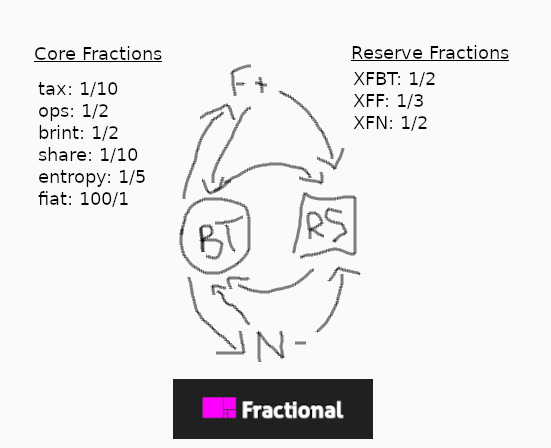

The Fractional Foundation
Fractional is a science/thought experiment to determine whether a decentralized centralbank-like entity could be structured and sustained solely based on simple, fraction based math applied to its core token’s activity.
Initial conception was simple and entirely non-aspirational (mostly looking for a throwaway excuse to play with Upgradeable contracts as a rookie smart contract dev): burning (outside of the semi-leap of faith trusting required of the the overly crude less supply = higher price understanding of supply/demand dynamics) is a wasteful destruction of value, so how could some of that pre-existing value be retained more concretely in a mathematically provable way while still honoring the goal of burning (reducing supply to help inflate the unit price of the asset)?
This created XFBT & XFRS (originally XBPT & XBPS as BurnPool in earliest dev phase), which set a tax divisor (10 initially/at launch), and burns half of the taxed amount, and pooled the other half in a wallet that manages a second indivisible token which is minted and transferred to the wallet who’s activity minted it so long as they transferred enough of the token to mint a share, otherwise half of the would-be pooled amount was transferred to an ops wallet instead as a means to afford ops costs (if it was ever launched as a public science experiment rather than just a testchain novelty), with the remainder being added back into the transfer amount.
But still… half of the tax was burnt, and going to waste… the problem I wanted to solve in the first place, so I’d effectively still solved nothing, I’d just shifted the goalposts. Which inspired the second conception that added XFF and XFN, and changed the name/direction: “brinting”. Technically the XFRS minting process isn’t burning anything, just pooling a tax… we could call that “tinting”. But with FractionalFiat, and FractionalEntropy, the burned tokens are still burnt, but the number burnt is then used to determine whether to “brint” a new asset of another class, binding the supply inflation of the derivative classes to the burnt quantity in a mathematically provable way, while also (kind of accidentally, via an initial failure in now obvious logic) pooling each of the 3 non-reserve asset classes to help underwrite the value of the entire economy derived.
And that… is all Fractional is. A Burn & Pool token with a twist, that “tints” Reserve pool shares based on a fraction, and “brints” Fiat and Entropy based on fractions, with the latter getting exponentially more scarce as tax rates are reduced with adoption, pooling a fraction of each asset (except Reserve shares) in the Reserve pool underwriting the aforementioned “tinted” Reserve Shares. It's simple fractions all the way down! Could have called it Turtles for the memecoin/meme points if the idea didn't seem serious enough to take semi-seriously...
If any of this dumb idea sounds neat to you, join the Fractional Foundation, and help me get this money brinter going brrrrrrrrrrrrn, just to see if it works. If it does, its not a project I can solo (since it's not very decentralized when the owner is just me :\ ), so I’ll need people helping pull this together into something approaching sustainable. In this incarnation, the shares are dumb shares that do nothing, but could provide the foundation (badumtsss) for both a DAO that realizes the goal of proper decentralization, and a fund that doesn’t just squat the pooled reserve, but instead puts it to work on behalf of XFRS holders.
Key Made Up Terms In This Doc
Tint
- the minting of an asset of one class via the process of taxing/pooling another asset of a different class
Brint
- the minting of an asset of one or more classes via the process of burning another asset of another class, and using the burnt quantity as a seed to determine minting. ASH already does this kind of burning in exchange for a different asset class with NFTs, but burning external contracts IMO requires externally defined "value" definitions = more complexity required to operate "fairly". This proposed form of "brinting" deals with only interal/derivative assets, making the market value ultimately irrelevant outside of DAO decisions re: internal value, while it could be generalized to include an ASH-like model with appropriate consideration to curb cheating.
DISCLAIMER: All numbers in this document are subject to change before any kind of launch, if there is ever an actual launch, and may have already been changed in dev builds without being publicly reflected. It's best to assume the numbers/math below are only partially current/correct, as both codebase and this documentation are in active development. I don't need to make this warning since nothing is yet for sale, but in case I forget to update this and it is eventually available for sale, you have now been warned.
FURTHER DISCLAIMER: I'm convinced this idea is probably broken crap... I can't determine whether there's anything here... or this is just a really grandiose sounding ponzi scheme wrapped in a securities fraud violation waiting to happen :\ lol. For the project to continue into anything approaching launch state, I need smart people to poke holes in this and inform me why this is doomed to fail and implode. No warranty is provided for the reckless implementation of any of this model.

The Assets Classes
XFBT (Fractional Burn Token):
This is the central token that determines the supply inflation of all other Fractional assets. It's a deflationary burncoin like any other, but with a twist of adding “tinting” of Reserve Shares, and “brinting” of Fiat and Entropy.
- Decimals: 18
- Total Supply: 10900000000 (10.9 billion, 1/person @ peak pop.)
- Supply Orientation: Deflationary
XFRS (Fractional Reserve Share):
This is an indivisible token representing a unit of the underlying pool of assets, made up of a combination of XFBT, XFF, and XFN collected through tinting and brinting processes, determined by the reserveFraction divisors set in each contract mentioned.
- Decimals: 0
- Total Supply: 0 at launch, inflates based on XFBT activity
- Supply Orientation: Inflationary, but at a relatively low rate
XFF (Fractional Fiat):
This is an inflationary token “brinted” at a fraction of the burnt XFBT value (1/2 during dev/launch), multiplied by an amount to account for the supply size disparity between XFBT & XFF (x100 at launch). A fraction (1/3 at launch) of XFF minted is transferred to the XFRS pool, and the remainder is transferred to the “brinter”. Intended to be more freely liquid than other assets, with a decimal count more closely reflecting real world fiat values (maybe?… activity will determine whether that idea is viable or not… but the x100 multiplier to start should give plenty of control over initial inflation/deflation of XFF once an "ideal price" is determined by market/DAO)
- Decimals: 6
- Total Supply: 1000000000000 (1 trillion) at launch, inflates based on XFBT activity
- Supply Orientation: Inflationary, at a low but appreciable and fine tunable rate.
XFN (Fractional Entropy):
This is a deflationary token with a “brinted” at a fraction of the burnt XFBT value. To determine minting, it takes the brinted value and divides it by the entropyFraction (5 at launch... maybe 10? undecided), and again by the current core tax divisor squared, and if that value is >=1, it mints the XFN and transfers a fraction (1/2 at launch to provide max value to XFRS holders) to the XFRS pool, and the remainder to the “brinter”. Intended to be a scarce asset, like a gold/BTC.
- Decimals: 18
- Total Supply: 0 at launch, inflates based on XFBT activity
- Supply Orientation: Supply increases with XFBT activity, at a very low and exponentially scarcer rate (assuming core tax rate is reduced with adoption, and/or 4000+ sized stacks of XFBT slip out of reach for most with shrinking supply), making it deflationary given the activity it's derived from is from a deflationary asset with a shrinking supply, while its scarcity is exponentially increased with each reduction in tax… I believe… I’m not an economist.
Tokenomics
At Launch:
- 10 = core tax divisor (1/10 tax)
- 1/2 tax = POOL, share distribution will be tinted at a rate of 1 XFRS/10 XFBT pooled, where XFRS calc >=1, otherwise 1/2 of the would-be pooled amount is sent to the ops wallet to help maintain ops costs, with the rest returning to the readyAmount and transferred
- 1/2 tax = BURN, brint XFF at a rate of 1/2 the burn x100 (to account for supply size disparity) so long as the pre-multiplied XFF calc >=1; brint XFN at a rate of 1/2 the burn/entropyFraction/(core tax*core tax), so long as XFN calc >=1 (entropyFraction = 5 at launch… 10 feels more right… discuss…)
- 1/2 of XFN and 1/3 of XFF brinted is pooled in XFRS, the rest is transferred to the “brinter”
- all fraction divisors can be adjusted by owner, except 7… the core tax divisor is hard coded to not accept anything lower than 7, maintaining a hardcoded max core tax rate of 14.2857%. Considered 5 and 6 for the lower bound, but feel like treating this more like a sales tax than an income/cap-gains tax in scale feels more right… may or may not regret the limitation but it seems logical atm…
Scarcity Metrics (At Launch)
- XFRS = 1/200 XFBT tx.value if 1/200 tx.value >=1 (indivisible, so remainder rolled back into transfer value)
- XFF = 10/4 XFBT tx.value if 1/40 tx.value >=1
- XFN = 1/2000 XFBT tx.value, if 1/2000 tx.value >=1 (will be 1/4000 when fiatFraction = 10 instead of 5)
- XFBT loses ~1/10 tx.value from market supply each tx (less non-share minting remainder of pooled value that’s rolled back into the transfer, and only 7.5% for sub-XFRS minting tx sizes given only half the pool collected as ops tax, which is technically not "removed from the market", but instead will be sold as needed for ops expenses)
- as core tax divisor increases to lower the tax rate with adoption, scarcity of XFN increases exponentially (given the core tax divisor squared is used as the divisor in its minting calculation, so higher divisor = lower tax, but exponentially harder to mint XFN)
Owner (Future DAO?) Controllable Values
Tokenomics Values
XFBT
uint8 taxFraction: core tax divisor. hard coded requirement that it's >= 7 to retain a max core tax of 14.2857% (10, for 1/10 as launch default)uint8 reserveFraction: divisor for the fraction of the tax that is considered for the reserve pool (2, for 1/2 as launch default)uint8 opsFraction: divisor for the fraction of the pool considered amount to transfer to the ops wallet for any sub-share minting transfers (2, for 1/2 as launch default)uint8 brintFraction: divisor for the fraction of the burnt amount to be considered for brinting numbers (2, for 1/2 as launch default)uint8 fiatFraction: dividend (multiplier) for brinted value of XFF to account for supply size disparity (100, for 100/1 as launch default, able to be adjusted to provide an extra means to adjust XFF inflation rate to adhere to whatever DAO set targets are decided by consensus. At launch the unilaterally decided inflation target consensus is… there’s not enough information for a valid consensus, and no clear sense of what the “right” price is, so the market can decide and the DAO can direct once formed.uint8 entropyFraction: divisor for brinted value of XFN to account for supply size disparity (5, for 1/5 as launch default, but I believe 1/10 is the more “correct” ratio?… increment from 5 to 10 over first 6 months to help with early interest maybe?)uint8 shareFraction: divisor for number of tax-pooled XFBT/share (10, for 1/10 as launch default)
XFF
uint8 reserveFraction: divisor for the fraction of minted XFF to pool in Reserve pool (3, for 1/3 as launch default)
XFN
uint8 reserveFraction: divisor for the fraction of minted XFN to pool in Reserve pool (2, for 1/2 as launch default)
Operational Values
XFBT
bool reserveLinked: tracks whether reserve is currently linked and/or reserve share tinting is enabledbool fiatLinked: tracks whether fiat contract is currently linked and/or fiat brinting is enabledbool entropyLinked: tracks whether entropy contract is currently linked and/or entropy brinting is enabledbool taxEnabled: tracks whether tax is enabled or not, acting as a standard ERC20 token if it's notaddress reserve_address: the address for XFRS, which retains a Reserve pool of XFBT, XFF, and XFN; if not set, reserveLinked is falseaddress fiat_address: the address for XFFaddress entropy_address: the address for XFNaddress ops_address: the wallet held by Fractional Foundation to be used for operational expenses (accounting, legal, hiring, infrastructure, marketing, etc); if not set ops_tax isn’t collected (only collected on sub XFRS minting txs if set)address lp_pool_address: address for the official liquidity pool, to disable tax for intermediary transfers; if not set, swaps will incur additional taxes (I think… don’t fully understand that side of liquidity pools)address lp_router_address: address for the official liquidity pool, to disable tax for intermediary transfers; if not set, swaps will incur additional taxes (I think… don’t fully understand that side of liquidity pools)
XFRS
address minter_address: address of permitted minting contract (XFBT as launch default)
XFF
address minter_address: address of permitted minting contract (XFBT as launch default)address reserve_address: address of Fraction Reserve pool (XFRS address as launch default)
XFN
address minter_address: address of permitted minting contract (XFBT as launch default)address reserve_address: address of Fraction Reserve pool (XFRS address as launch default)
Team
Current (1)
- Brandon Thorn: developer (fullstack web 2.0 + Unity3D game dev) with 10+ years professional experience and a lifetime of nerd experience. In a previous life I founded, developed and compiled a small team around sourced.fm, an experiment in social capitalism pairing regionalized music discussions with crowdfunding (failed to grow adoption to the scale required for the crowdfunding component after a poorly thought through/half-hocked soft launch, but learned a lot failing :P). Currently the Web & Systems Manager @ Exclaim! Media, in the process of handing off infrastructure management to focus on webdev requirements of the job only so I can take on new work or run with side projects (like this one :P).
Game projects include a Room Sim concept prototype (think FB Horizons before it was announced, featuring a synced Rick Astley experience for all to enjoy :P), a music synced 2.5D Valheim inspired robot action adventure game hardcoded to 144BPM with a max APM to match, and an economics based 4X game featuring non-local expansion played out on a chessboard inspired by the painfully bad, but still somehow almost good game Evil Bank Manager (still picking at this one... it might have gotten a bit too meta... :\ lol).
More recently playing with Solidity/DLT dev. Participated in the Chainlink hosted Hardhat Solidity dev workshop earlier this year (2021) and now I can’t look away…
Essential Unfilled Roles (7)
- Legal: IANAL, but I did accidentally steal a highschool Law textbook once after auditing the class for a semester, which meant I wasn’t on the class list for a call to remind me to bring it back… oops :\ … on the upside because of it I know the statute of limitations of highschool textbook theft has run its course, if it hasn't already been obsoleted in edition anyway, so I’m allowed to tell you lol. In another life I was a lawyer, because I love a rousing, rules/logic oriented debate with a clear win/lose objective, and grew up playing M:TG, growing to love any system that lets me deckbuild around certain broken/OP mechanics (honestly... for all roles, preference would be shown to pre-reweighted M:TG players, even just to have in-house broken semi-legacy deck battles on tap for idea-gen lol). I’m going to need a cutthroat crypto/securities/nerd-savvy lawyer buddy in my corner to make this real as claimed. Your natural mana colors will be blue/black, but in a pinch you need to be able to play white/red, so we can focus up on product staying/printing green ;)
- Accounting/Economic Theory/Finance Wizard: I’ll need someone who understands the tax ramifications of all this to be compiling books in an orderly way, and ensuring any tax liabilities are in whatever account and form of capital needed to pay the bills, regardless of the state of the market or asset prices. Ideally between bookkeeping and tax compliance management (sorry, both those sound like shitty enough jobs on their own already :\ ), while also working with the lawyer buddy above to ensure any requisite securities compliance accounting is met, this person has strong economic theory fundamentals and can help shape early KPI objectives of the Fractional economy.
- Solidity/React Devs: I am a fairly new blockchain developer, and there’s all kinds of roadblocks I still run into with even the simplest ideas. Experienced dev talent that could help shape the future feature-sets and integrate the system with a DAO would be essential for this to be anything more than 4 interconnected ERC20 tokens with some functions to tweak the underlying fractions.
- Ops/PM: I like organizing things/code/ideas… but don’t want to be the one organizing the many people/processes/tasks that will be required to keep this machine operational (was one thing I learned failing at sourced.fm… I can’t be that guy while also trying to guide/dev product direction, or it's doomed to fail given the context shifts required between micro and macro just leading to burnout). Ops/PM role will need to have a firm understanding of the technology, while not necessarily needing to be of a tech background (basically, I need a Jared from Silicon Valley who can be the glue of the Foundation holding it together and keeping it moving forward amid whatever chaos may come, and I will happily invite whatever strange eccentricities might be required to find a person capable of fulfilling that role... given it's perhaps the single most critical role amid these listed, and I come with my own set of eccentricities :P)
- Marketing/Community: This idea only works with liquidity, and that means people… which means marketing. Marketing is only half, if not less, of the required role though. For any viable crypto project, especially aiming to operate as a DAO, community matters more than hypey marketing, making a marketing minded community manager an essential asset to help the foundation grow into itself and its potential by engaging the community as it forms and including it in development/fractional tuning decisions until the DAO is developed (with the help of the feedback collected by this person) and able to officially handle that role. For an example of the kind of person needed in this role in the earliest stages, I need someone to play the role of Chainlink's Rory Piant (IMO a de facto crypo saint... honestly dude #bless... that's a rough/toxic early adopter crowd, and you handled it all like a bonafide saint), while maybe adding a spash of Mad Men-like marketing idea gen (maybe Rory was doing that behind the scenes too... we'll never know... the mystery and intrigue kept us all sustained... hats off sir ;) lol)
- Bizdev/B2B Sales: There are a lot of commercial applications for the underlying structure going on here (past a certain scale), especially once a DAO is formed atop the Reserve and the reserve pool capital is put to work. As those nextgen features (lending, VC, and insurance come to mind) are considered/developed, onboarding corps, both large and small, local and abroad, to leverage the infrastructure would be ideal, if not necessary to achieve the longer term goals of the Foundation: to assert Fractional Fiat as a viable alternative to existing central bank determined/derived fiat, and as a stopgap owned by the commons in the face of new corporate owned attempts to usurp control of the money supply (Libra/Diem).
- Security Audit (third party contract): As stated, I’m a relatively noob Solidity dev, and while the tokens are mostly standard ERC20 contracts using OpenZeppelin’s implementation contract as the base, there are customizations that I’d want to have reviewed by someone more experienced to ensure nothing unforeseen ruins the experiment and costs people their investments.
Extremely Advantageous Unfilled Role (1)
- Game Theory: I know I want to learn more about this myself, but I am unfortunately not math nerd enough to have taken on the challenge. There’s something about this project that feels like what could make or break it is very much going to be this role though… pairing game theory with market modelling techniques to both help launch the most viable version of this, while also providing a foundation for the DAO to help build automated models into its fine tuning machine over time.
Roadmap
To Date
- November 18th, 2021: concept inception as Burnpool with XBPT & XBPS & initial contracts & tasks written
- November 21st, 2021: brinting/tinting concepts/delineation becomes more clear, and project changes to Fractional, adding XFF and XFN to the now renamed XFBT and XFRS
- November 21st, 2021: RC contracts compiled
- November 22nd-24th, 2021: wrote this documentation, domain registered, logo made, website made, pitchdeck made
- November 25th, 2021: v0 successfully deployed on local testnet & site soft launched
- currently doing mild code cleanup, improving support tooling, and thinking through next steps
Next Steps (rather than pretending to have an actual timeline…)
- familiarizing myself more with scripting initial liquidity offerings to finish up the launch scripts, and will want to see some upgrades successfully upgrading to know I’m working with them correctly
- once fully tested, and documentation updated to match the code/values for the v0.2.0 RC, I’ll ideally run an open beta on Kovan, as well as begin more actively seeking/pricing out audits
- launching to mainnet at some undetermined date when there’s at least a couple other people helping manage the day-to-day ops & potentially helping chip in initial liquidity (I can toss in some of it and had intended to fully fund BurnPool to start when it was just 2 kind of throwaway tokens, but funding 4 LPs + paying for security audits for 4 more seriously taken tokens is going to get a bit pricey, so any early believers who want to help capitalize those, especially those with initial liquidity offering experience would be appreciated/make the project both more reputable and viable)
- after launch will likely make some super simple React app just to display market KPIs for the assets (since the value of XFRS is underwritten by a pool of assets, so I want to track under/overperformance metrics for the Reserve Shares at minimum to contrast book vs market value and highlight internal arbops)
- after launch I also want Chainlink price feeds pairing XFF against every existing recognized fiat!
- after mainnet launch, will begin process of defining DAO, building out DAO (or jumping onto an existing DAO service maybe?… likely? lol), and announcing XFRS=>DAO LP swaps with future team + community feedback guiding structure and founding direction/strategy
- with a DAO, there’d almost certainly be a need for more app dev, so more dev team hires would be needed, requiring some of the ops_wallet funds to be tapped, especially if there’s still been no VC to this point. This will help augment the basic KPI dashboard to include inflation, holder, activity, and liquidity metrics for each asset, giving the DAO more insight into the economy it's tasked with stewarding
- post DAO formation and dashboard augmentations, DAO can begin discussions for adding value to XFRS by making use of Reserve pool capital to underwrite additional services (lending, VC, and insurance come to mind) instead of just squatting the pool